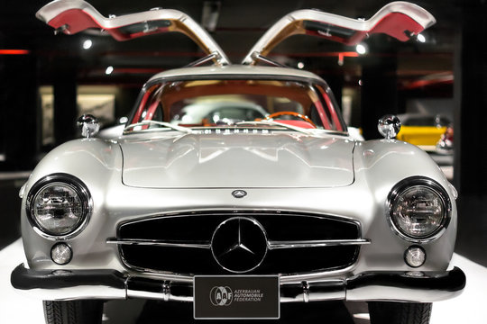
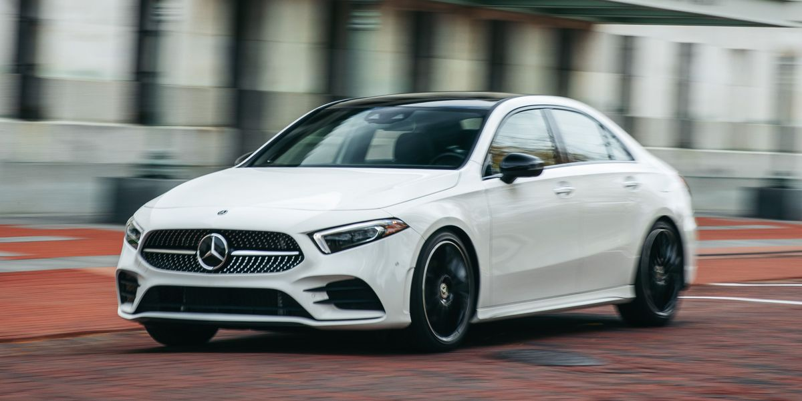
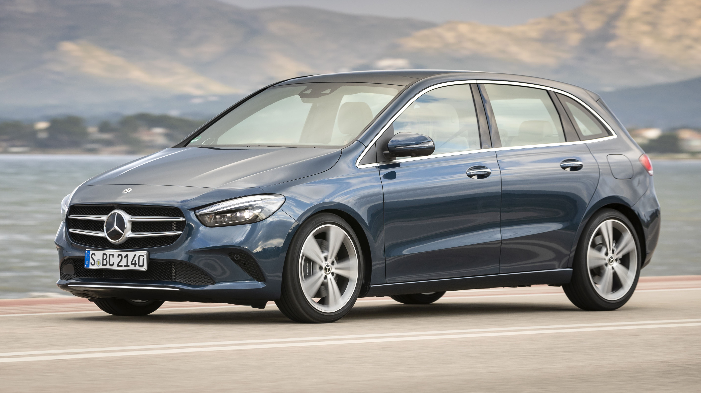

Mercedes-Benz
History
Mercedes-Benz traces its origins to Karl Benz's creation of the first internal combustion engine in a car, seen in the Benz Patent Motorwagen – financed by Bertha Benz's dowry[10] and patented in January 1886[11] – and Gottlieb Daimler and their engineer Wilhelm Maybach's conversion of a stagecoach, with the addition of a petrol engine, introduced later that year. The Mercedes automobile was first marketed in 1901 by Daimler-Motoren-Gesellschaft (DMG).
Production
The Mercedes-Benz GLE-Class Sport Utility, the full-sized GL-Class Luxury Sport Utility and the Mercedes-Benz C-Class vehicles are all built at the Mercedes-Benz U.S. International production facility near Tuscaloosa, Alabama.[51] Trucks (6,000 per year in the early eighties) were once assembled in Hampton, Virginia.
Models
Mercedes-Benz offers a versatile range of consumer-passenger, light commercial and heavy commercial equipment. These vehicles are manufactured in multiple countries worldwide. The Smart marque of city cars are also produced by Daimler AG.
A hatchback is a car body configuration with a rear door[1][2][3][4][5] that swings upward to provide access to a cargo area. Hatchbacks may feature fold-down second row seating, where the interior can be reconfigured to prioritize passenger or cargo volume. Hatchbacks may feature two- or three-box design. While early examples of the body configuration can be traced to the 1930s, the Merriam-Webster dictionary dates the term itself to 1970.[2] The hatchback body style has been marketed worldwide on cars ranging in size from superminis to small family cars, as well as executive cars and some sports
B-class
Minivan (sometimes called simply as van) is a North American car classification for vehicles designed to transport passengers in the rear seating row(s), with reconfigurable seats in two or three rows. The equivalent classification in Europe is MPV (multi purpose vehicle) or a people carrier/mover.[2] Minivans often have a 'one-box' or 'two-box' body configuration, a higher roof, a flat floor, sliding doors for rear passengers, and high H-point seating. Minivan is also equivalents in Asia is AUV or Asian Utility Vehicle. Compared with a full-size van, most minivans are based on a passenger car platform and have a lower body. Early models such as the Ford Aerostar and Chevrolet Astro utilized a compact pickup truck platform.[3][4] The largest size of minivans is also referred to as 'Large MPV' and became popular following the introduction of the 1984 Dodge Caravan and Renault Espace. Typically, these have platforms derived from D-segment passenger cars or compact pickups. Since the 1990s, the smaller compact MPV and mini MPV sizes of minivans have also become popular.[5]
C-class

The Mercedes-Benz C-Class is a series of compact executive cars produced by Mercedes-Benz Group AG. Introduced in 1993 as a replacement for the 190 (W201) range, the C-Class was the smallest model in the marque's line-up until the W168 A-Class arrived in 1997. The C-Class has been available with a "4MATIC" four-wheel drive option since 2002. The third generation (W204) was launched in 2007 while the current W206 generation was launched in 2021. Initially available in sedan and a station wagon configurations, a fastback coupé (SportCoupé) variant followed and was later renamed to Mercedes-Benz CLC-Class. It remained in production until 2011 when a new W204 C-Class coupé replaced it for the 2012 model year.
Motorsport
The two companies which were merged to form the Mercedes-Benz brand in 1926 had both already enjoyed success in the new sport of motor racing throughout their separate histories. A single Benz competed in the world's first motor race, the 1894 Paris–Rouen, where Émile Roger finished 14th in 10 hours 1 minute. Throughout its long history, the company has been involved in a range of motorsport activities, including sports car racing and rallying. On several occasions, Mercedes-Benz has withdrawn completely from motorsport for a significant period, notably in the late 1930s, and after the 1955 Le Mans disaster, where a Mercedes-Benz 300 SLR rammed another car (an Austin-Healey), took off into the stands, and killed more than 80 spectators. Stirling Moss and co-driver Denis Jenkinson won the 1955 Mille Miglia road race in Italy during a record-breaking drive with an average speed of almost 98 mph in a Mercedes-Benz 300 SLR.[99] Although there was some activity in the intervening years, it was not until 1987 that Mercedes-Benz returned to front line competition, returning to Le Mans, Deutsche Tourenwagen Meisterschaft (DTM), and Formula One with Sauber. The 1990s saw Mercedes-Benz partner with British engine builder Ilmor (now Mercedes-Benz High Performance Engines), and campaign IndyCars under the USAC/CART rules, eventually winning the 1994 Indianapolis 500 and 1994 CART IndyCar World Series Championship with Al Unser Jr. at the wheel. The 1990s also saw the return of Mercedes-Benz to GT racing with the Mercedes-Benz CLK GTR, which took the company to two titles in FIA's GT1 class. Mercedes-Benz is currently active in three motorsport categories, Formula E, Formula One and GT racing.
Formula One
Mercedes-Benz took part in the world championship in 1954 and 1955, but despite being successful with two championship titles for Juan-Manuel Fangio,[100] the company left the sport after just two seasons. Mercedes-Benz returned as an engine manufacturer in 1994, with the engines being designed and manufactured by Ilmor in Brixworth.[101] It initially partnered with Sauber, before switching to McLaren in 1995. Although the Mercedes engines were not successful at first, they later won drivers' championships for Mika Häkkinen in 1998 and 1999, and for Lewis Hamilton in 2008, as well as a constructors' championship in 1998. Mercedes part-owned McLaren, and the collaboration had been extended into the production of road-going cars such as the Mercedes-Benz SLR McLaren. In 2007, McLaren-Mercedes was fined a record US$100 million for stealing confidential Ferrari technical data.[102] In 2009, Ross Brawn's newly conceived Formula One team, Brawn GP used Mercedes engines to win the titles. At the end of the season, Mercedes-Benz sold its 40% stake in McLaren to the McLaren Group and bought 70% of the Brawn GP team jointly with an Abu Dhabi-based investment consortium. Brawn GP was renamed Mercedes GP for the 2010 season and became the main team for Mercedes-Benz. The company continued providing engines to other teams under customer relationships.[103] After major rule changes in 2014, Mercedes clinched the drivers' and constructors' titles with drivers Lewis Hamilton and Nico Rosberg, after dominating much of the season. Mercedes repeated the feat in 2015, winning 16 out of 19 races, and again in 2016, winning 19 of the 21 races. In the following years, Mercedes continued their success by winning the drivers' championships from 2017 to 2020 and the constructors' championships from 2017 to 2021, becoming the first team to win seven consecutive "double-championships".[104][105][106] In these years, Hamilton was the champion in 2014, 2015, 2017, 2018, 2019 and 2020, while Rosberg won in 2016.[104] Their unbeaten streak was broken in 2021, when Max Verstappen of Red Bull-Honda won the drivers' championship.
Formula E
Prior to pre-season testing of the 2019–20 Formula E Championship, it was announced that Mercedes, through its EQ branch, would join the championship with drivers Stoffel Vandoorne and 2019 FIA Formula 2 champion Nyck De Vries. The team named their Spark Gen2 challenger the Mercedes EQ Silver Arrow 01.
| Model | Year | Price |
|---|---|---|
| Mercedes-Benz GLA SUV | 1970 | $50,000 |
| Mercedes-Benz GLB SUV | 1970 | $52,000 |
| C-class | 1970 | $60,000 |
| AMG | 1970 | $75,000 |
| Formula | 1974 | $110,000 |
| Mercedes-Maybach GLS SUV | 1980 | $1,500,000 |
List of Models
- Mercedes-Benz GLA SUV
- Mercedes-Benz GLB SUV
- Mercedes-Benz GLC SUV
- HMTL:
- Hypertext markup Language